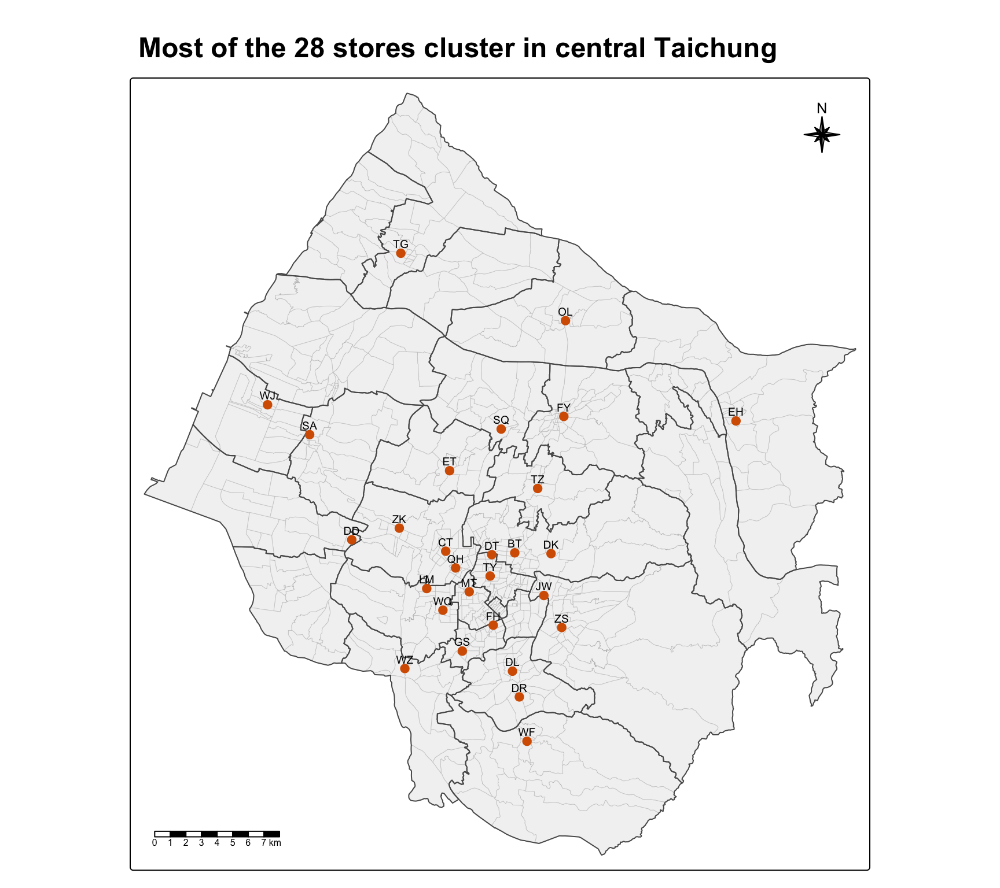
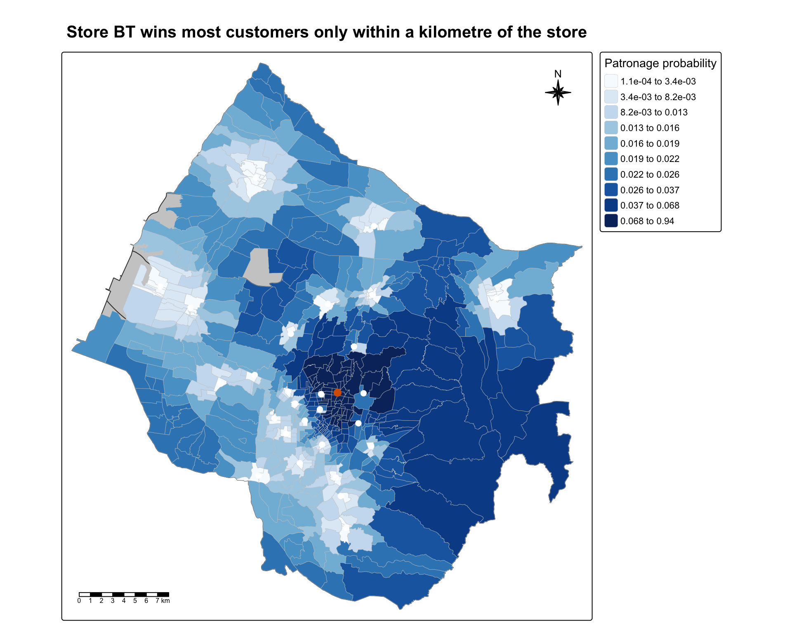
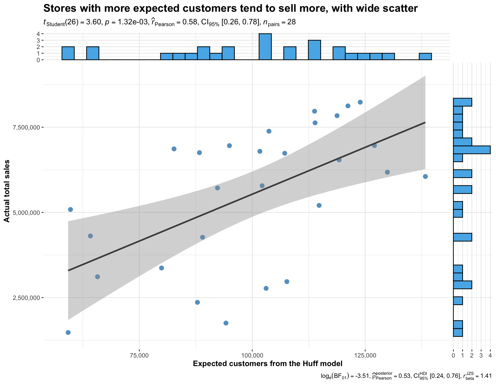
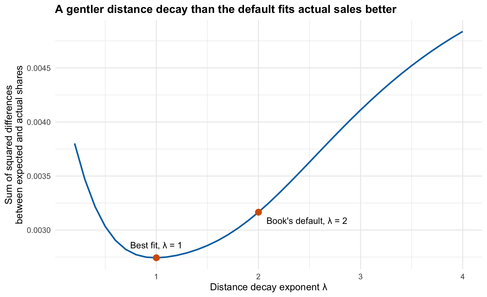
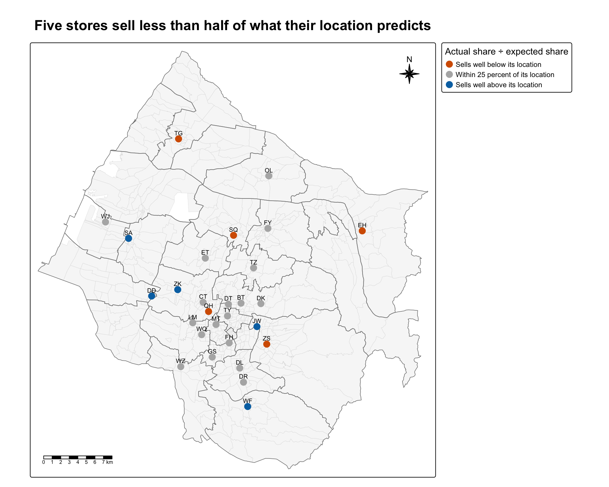
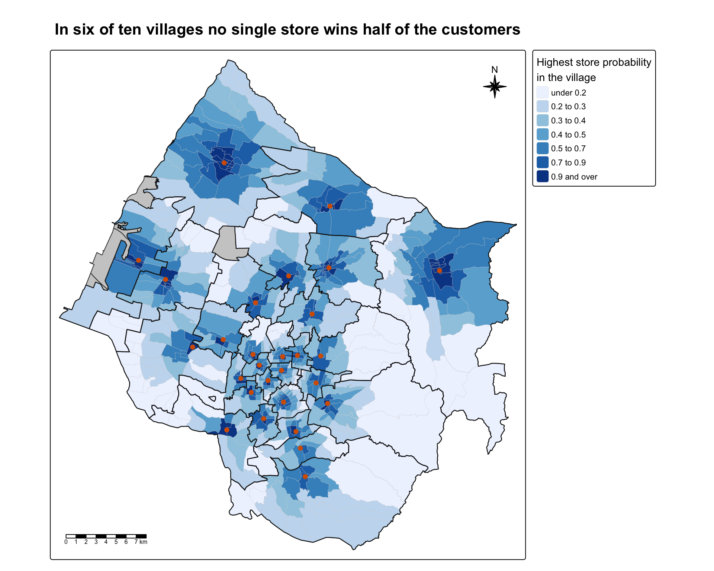

pacman::p_load(sf, tidyverse, MCI, tmap, ggstatsplot, knitr)Hands-on Exercise 8
Market Area Analysis with the Huff Model
617 villages in Taichung City, 28 fast-food stores STORES_TC, TOWN_TC, VILLAGE_TC shapefiles, pop2019.csv, Store_sales_data.csv sf MCI tmap ggstatsplot tidyverse knitr
1 Overview
This exercise follows chapter 18 of the book and Lesson 8. A market area, or trade area, is the area a store draws its customers from. The Huff model estimates the chance that people living in one place shop at each store. The chance goes up with how attractive the store is and down with how far away it is, compared with all the competing stores.
The setting is a fast-food franchise with 28 stores in Taichung City, Taiwan. I compute the Huff probabilities from every village to every store, map the trade area of one store, and use the village populations to estimate how many customers each store should get. Then I compare that estimate with the stores’ actual sales.
2 Loading the Packages
MCI is the new package. Its huff.shares() computes the Huff probabilities and shares.total() adds them up for each store. sf, tmap, tidyverse and ggstatsplot do the same jobs as before, and I add knitr for tables.
3 Importing the Data
3.1 Importing the Geospatial Data
st_read() of sf reads the three shapefiles, the store locations, the district boundaries and the village boundaries.
stores <- st_read(dsn = "data/geospatial", layer = "STORES_TC")Reading layer `STORES_TC' from data source
`/Users/czxtom/Documents/Programming/GAA/ISSS626-GAA/Hands-on_Ex/Hands-on_Ex08/data/geospatial'
using driver `ESRI Shapefile'
Simple feature collection with 28 features and 3 fields
Geometry type: POINT
Dimension: XY
Bounding box: xmin: 202702.9 ymin: 2662196 xmax: 232773.2 ymax: 2693557
Projected CRS: TWD97 / TM2 zone 121town <- st_read(dsn = "data/geospatial", layer = "TOWN_TC")Reading layer `TOWN_TC' from data source
`/Users/czxtom/Documents/Programming/GAA/ISSS626-GAA/Hands-on_Ex/Hands-on_Ex08/data/geospatial'
using driver `ESRI Shapefile'
Simple feature collection with 28 features and 7 fields
Geometry type: POLYGON
Dimension: XY
Bounding box: xmin: 194797.1 ymin: 2654887 xmax: 240450.2 ymax: 2703838
Projected CRS: TWD97 / TM2 zone 121village <- st_read(dsn = "data/geospatial", layer = "VILLAGE_TC")Reading layer `VILLAGE_TC' from data source
`/Users/czxtom/Documents/Programming/GAA/ISSS626-GAA/Hands-on_Ex/Hands-on_Ex08/data/geospatial'
using driver `ESRI Shapefile'
Simple feature collection with 622 features and 10 fields
Geometry type: MULTIPOLYGON
Dimension: XY
Bounding box: xmin: 194797.1 ymin: 2654887 xmax: 240450.2 ymax: 2703838
Projected CRS: TWD97 / TM2 zone 121All three layers are in TWD97 / TM2 zone 121, EPSG 3826, a projected system in metres. I check the codes directly instead of reading them off the printout.
c(stores = st_crs(stores)$epsg,
town = st_crs(town)$epsg,
village = st_crs(village)$epsg) stores town village
3826 3826 3826 There are 28 stores, 28 districts and 622 villages.
tm_shape() and tm_polygons() of tmap draw the districts and villages, and tm_dots() adds the stores.

tm_shape(village) +
tm_polygons(fill = "grey95", col = "grey75", lwd = 0.3) +
tm_shape(town) +
tm_borders(col = "grey35", lwd = 1) +
tm_shape(stores) +
tm_dots(size = 0.5, fill = "#D55E00", col = "black") +
tm_text("Store_CD", size = 0.6, ymod = 0.7) +
tm_title("Most of the 28 stores cluster in central Taichung",
size = 1.5, fontface = "bold") +
tm_compass(type = "8star", size = 2, position = c("right", "top")) +
tm_scalebar(position = c("left", "bottom"))The stores sit close together in the central districts. A few stand alone at the edges, such as TG in Dajia in the north and EH in Dongshi in the east. 7 of the 28 districts have no store at all.
CautionWhere I differ from the book
The book draws this overview with tmap_mode("view") as an interactive web map. I use static plot mode with the store codes as labels, so the map shows without loading web tiles and I can see which code is which store. The thick lines are the district boundaries and the thin ones are the villages.
3.2 Importing the Aspatial Data
read_csv() of readr reads the 2019 population by village and the store sales records.
pop2019 <- read_csv("data/aspatial/pop2019.csv")
store_sales <- read_csv("data/aspatial/Store_sales_data.csv")summary(store_sales) Store Code POD code Bills Amount
Length :5499 Length :5499 Min. : 1.0 Min. : 0
N.unique : 233 N.unique : 322 1st Qu.: 37.0 1st Qu.: 26702
N.blank : 0 N.blank : 0 Median : 186.0 Median : 139643
Min.nchar: 2 Min.nchar: 1 Mean : 331.9 Mean : 236787
Max.nchar: 2 Max.nchar: 6 3rd Qu.: 457.0 3rd Qu.: 331952
NAs : 29 Max. :7764.0 Max. :6076060
Ave Bill
Min. : 0.0
1st Qu.: 661.3
Median : 730.5
Mean : 825.1
3rd Qu.: 862.2
Max. :24356.0 H_CNT, P_CNT, M_CNT and F_CNT in pop2019 are the number of households, the total population, and the male and female population.
ImportantCheck that caught something
The sales file has 5,499 rows, but they are not all from the 28 Taichung stores. I count the store codes in it.
c(codes_in_sales_file = n_distinct(store_sales$`Store Code`, na.rm = TRUE),
rows_without_code = sum(is.na(store_sales$`Store Code`)),
codes_in_Taichung = sum(unique(store_sales$`Store Code`) %in% stores$Store_CD),
Taichung_stores_missing = sum(!stores$Store_CD %in% store_sales$`Store Code`)) codes_in_sales_file rows_without_code codes_in_Taichung
233 29 28
Taichung_stores_missing
0 The file covers 233 store codes, so it seems to come from the whole chain, and 29 rows have no store code at all. Only 28 are in Taichung, and every Taichung store has sales. The book’s left_join() onto the stores keeps only those 28, so the other stores and the rows without a code drop out without any warning. That is what we want here, but the summary() above describes the whole file, not the 28 stores.
4 Data Preparation
4.1 Aggregating the Store Sales
group_by() and summarise() of dplyr add up the bills and the sales amount for each store code.
store_sales_aggre <- store_sales %>%
group_by(`Store Code`) %>%
summarise(
"Total_Bill" = sum(Bills, na.rm = TRUE),
"Total_Sales" = sum(Amount, na.rm = TRUE))4.2 Joining the Sales to the Stores
left_join() appends the totals to the stores, and mutate() gives every store a size of 100.
stores <- stores %>%
left_join(store_sales_aggre,
by = join_by(Store_CD == `Store Code`)) %>%
mutate(Store_size = 100)summary(stores) Store_Name Store_Addr Store_CD Total_Bill
Length :28 Length : 28 Length :28 Min. : 1767
N.unique :28 N.unique : 28 N.unique :28 1st Qu.: 5698
N.blank : 0 N.blank : 0 N.blank : 0 Median : 8634
Min.nchar: 2 Min.nchar: 43 Min.nchar: 2 Mean : 8021
Max.nchar:28 Max.nchar:100 Max.nchar: 2 3rd Qu.:10349
Max. :14468
Total_Sales geometry Store_size
Min. :1475963 POINT :28 Min. :100
1st Qu.:4044821 epsg:3826 : 0 1st Qu.:100
Median :6116336 +proj=tmer...: 0 Median :100
Mean :5542852 Mean :100
3rd Qu.:6959911 3rd Qu.:100
Max. :8234234 Max. :100 There are no missing values. Total sales run from 1,475,963 to 8,234,234, so the best store sells about 5.6 times as much as the weakest.
NoteLearning diary
Store_size is the store’s attractiveness in the Huff model. The book sets it to 100 for every store because the data has no real measure of size. In the lesson’s formula the attractiveness appears on the top and the bottom of the probability, so when every store has the same value it cancels out. The probabilities then depend on distance only. Everything that follows is a model of geography, where a store wins customers just by being nearer than its rivals.
4.3 Tidying the Population Data
Before joining pop2019 to the villages, I check that the join fields look the same.
glimpse(pop2019)Rows: 625
Columns: 11
$ COUNTY_ID <dbl> 66000, 66000, 66000, 66000, 66000, 66000, 66000, 66000, 6600…
$ COUNTY <chr> "臺中市", "臺中市", "臺中市", "臺中市", "臺中市", "臺中市", "臺中市", "臺中市", "臺中市…
$ TOWN_ID <dbl> 66000110, 66000110, 66000110, 66000110, 66000110, 66000110, …
$ TOWN <chr> "大甲區", "大甲區", "大甲區", "大甲區", "大甲區", "大甲區", "大甲區", "大甲區", "大甲區…
$ V_ID <chr> "66000110-002", "66000110-009", "66000110-021", "66000110-00…
$ VILLAGE <chr> "大甲里", "中山里", "太白里", "孔門里", "文曲里", "文武里", "日南里", "平安里", "江南里…
$ H_CNT <dbl> 454, 1781, 406, 383, 355, 2071, 2039, 785, 461, 559, 769, 80…
$ P_CNT <dbl> 1255, 5252, 1471, 1001, 1264, 6687, 6739, 2642, 1618, 1977, …
$ M_CNT <dbl> 626, 2533, 758, 538, 640, 3244, 3406, 1310, 838, 983, 1273, …
$ F_CNT <dbl> 629, 2719, 713, 463, 624, 3443, 3333, 1332, 780, 994, 1239, …
$ INFO_TIME <chr> "108Y12M", "108Y12M", "108Y12M", "108Y12M", "108Y12M", "108Y…glimpse(village)Rows: 622
Columns: 11
$ VILLCODE <chr> "66000110029", "66000120001", "66000120002", "66000120003",…
$ COUNTYNAME <chr> "臺中市", "臺中市", "臺中市", "臺中市", "臺中市", "臺中市", "臺中市", "臺中市", "臺中…
$ TOWNNAME <chr> "大甲區", "清水區", "清水區", "清水區", "清水區", "清水區", "清水區", "清水區", "清水…
$ VILLNAME <chr> "建興里", "鰲峰里", "靈泉里", "清水里", "文昌里", "南寧里", "西寧里", "北寧里", "中興…
$ VILLENG <chr> "Jianxing Vil.", "Aofeng Vil.", "Lingquan Vil.", "Qingshui …
$ COUNTYID <chr> "B", "B", "B", "B", "B", "B", "B", "B", "B", "B", "B", "B",…
$ COUNTYCODE <chr> "66000", "66000", "66000", "66000", "66000", "66000", "6600…
$ TOWNID <chr> "B11", "B12", "B12", "B12", "B12", "B12", "B12", "B12", "B1…
$ TOWNCODE <chr> "66000110", "66000120", "66000120", "66000120", "66000120",…
$ NOTE <chr> NA, NA, NA, NA, NA, NA, NA, NA, NA, NA, NA, NA, NA, NA, NA,…
$ geometry <MULTIPOLYGON [m]> MULTIPOLYGON (((211953.9 27..., MULTIPOLYGON (…V_ID in pop2019 has a dash, like 66000110-002, while VILLCODE in the village layer does not. str_remove_all() of stringr removes the dash.
pop2019 <- pop2019 %>%
mutate(V_ID = str_remove_all(V_ID, "-"))Now left_join() appends the population to the villages.
village <- village %>%
left_join(pop2019,
by = join_by(VILLCODE == V_ID))
ImportantCheck that caught something
pop2019 has 625 villages but the village layer has 622. A left join keeps the rows of the village layer, so any village that is only in pop2019 is dropped without a message. I check which ones.
pop_only <- pop2019 %>%
filter(!V_ID %in% village$VILLCODE)
pop_only %>%
group_by(TOWN_ID, TOWN) %>%
summarise(villages = n(), people = sum(P_CNT), .groups = "drop") %>%
kable()| TOWN_ID | TOWN | villages | people |
|---|---|---|---|
| 66000290 | 和平區 | 8 | 10902 |
as.character(unique(pop_only$TOWN_ID)) %in% as.character(town$TOWNCODE)[1] FALSEAll 8 dropped villages are in one district, 和平區, which is Heping District, with 10,902 people. Its code is not in the town layer either, which has 28 districts. So Heping, the mountain area in the east of Taichung, has been left out of the study area. It holds only 0.4 percent of the people and has no store, so leaving it out changes little. But it means the analysis covers 28 districts, not the whole city.
4.4 Checking for Missing Values
summary(village) VILLCODE COUNTYNAME TOWNNAME VILLNAME
Length :622 Length :622 Length :622 Length :622
N.unique :622 N.unique : 1 N.unique : 28 N.unique :548
N.blank : 0 N.blank : 0 N.blank : 0 N.blank : 0
Min.nchar: 11 Min.nchar: 3 Min.nchar: 2 Min.nchar: 3
Max.nchar: 11 Max.nchar: 3 Max.nchar: 3 Max.nchar: 4
NAs : 5
VILLENG COUNTYID COUNTYCODE TOWNID
Length :622 Length :622 Length :622 Length :622
N.unique :527 N.unique : 1 N.unique : 1 N.unique : 28
N.blank : 0 N.blank : 0 N.blank : 0 N.blank : 0
Min.nchar: 7 Min.nchar: 1 Min.nchar: 5 Min.nchar: 3
Max.nchar: 16 Max.nchar: 1 Max.nchar: 5 Max.nchar: 3
NAs : 5
TOWNCODE NOTE COUNTY_ID COUNTY
Length :622 Length :622 Min. :66000 Length :622
N.unique : 28 N.unique : 1 1st Qu.:66000 N.unique : 1
N.blank : 0 N.blank : 0 Median :66000 N.blank : 0
Min.nchar: 8 Min.nchar: 5 Mean :66000 Min.nchar: 3
Max.nchar: 8 Max.nchar: 5 3rd Qu.:66000 Max.nchar: 3
NAs :617 Max. :66000 NAs : 5
NAs :5
TOWN_ID TOWN VILLAGE H_CNT
Min. :6.6e+07 Length :622 Length :622 Min. : 180
1st Qu.:6.6e+07 N.unique : 28 N.unique :548 1st Qu.: 724
Median :6.6e+07 N.blank : 0 N.blank : 0 Median :1335
Mean :6.6e+07 Min.nchar: 2 Min.nchar: 3 Mean :1592
3rd Qu.:6.6e+07 Max.nchar: 3 Max.nchar: 4 3rd Qu.:2195
Max. :6.6e+07 NAs : 5 NAs : 5 Max. :7599
NAs :5 NAs :5
P_CNT M_CNT F_CNT INFO_TIME
Min. : 487 Min. : 257 Min. : 230 Length :622
1st Qu.: 2139 1st Qu.:1095 1st Qu.:1053 N.unique : 1
Median : 3862 Median :1911 Median :1934 N.blank : 0
Mean : 4545 Mean :2234 Mean :2311 Min.nchar: 7
3rd Qu.: 6151 3rd Qu.:3022 3rd Qu.:3171 Max.nchar: 7
Max. :18652 Max. :8741 Max. :9911 NAs : 5
NAs :5 NAs :5 NAs :5
geometry
MULTIPOLYGON :622
epsg:3826 : 0
+proj=tmer...: 0
Five villages have no population. I look at them before removing them.
village %>%
st_drop_geometry() %>%
filter(is.na(P_CNT)) %>%
select(VILLCODE, TOWNID, VILLNAME, VILLENG) %>%
kable()| VILLCODE | TOWNID | VILLNAME | VILLENG |
|---|---|---|---|
| 66000120S01 | B12 | NA | NA |
| 66000120S02 | B12 | NA | NA |
| 66000140S01 | B14 | NA | NA |
| 66000250S01 | B25 | NA | NA |
| 66000120S03 | B12 | NA | NA |
Their codes end in S01 to S03 instead of a number, and they have no village name. They seem to be special areas without residents rather than villages with missing data, so removing them is safe. filter() removes them.
village <- village %>%
filter(!is.na(P_CNT))any(is.na(village$H_CNT))[1] FALSEany(is.na(village$P_CNT))[1] FALSEany(is.na(village$M_CNT))[1] FALSEany(is.na(village$F_CNT))[1] FALSEAll four are FALSE. 617 villages with 2,804,359 people are left.
5 Computing the Distance Matrix
Each village needs one point to measure distance from. st_point_on_surface() of sf gives a point that is always inside the village, and st_distance() computes the straight-line distance from each of those points to each store.
village_center <- st_point_on_surface(village)
distmat <- st_distance(village_center, stores)
dim(distmat)[1] 617 28
NoteLearning diary
The book says it uses the centroid of each village, but the code uses st_point_on_surface(). The two are not the same. A centroid is the centre of mass, and for a curved or oddly shaped village it can fall outside the village. I count how often that happens here.
village_centroid <- st_centroid(village)
centroid_outside <- sum(!diag(st_within(village_centroid, village, sparse = FALSE)))
centroid_outside[1] 88 village centroids fall outside their own village. The point on surface avoids this, so the code is right and only the text is loose.
The matrix has one row per village and one column per store. The book names the rows and columns with the codes and turns the matrix into a long table with pivot_longer() of tidyr, one row per village and store pair.
rownames(distmat) <- village$`VILLCODE`
colnames(distmat) <- stores$`Store_CD`
distmat_long <- distmat %>%
as.data.frame() %>%
rownames_to_column(var = "VILLCODE") %>%
pivot_longer(
cols = -VILLCODE,
names_to = "Store_CD",
values_to = "distance") %>%
mutate(distance = as.numeric(distance))There are 17,276 pairs, 617 villages × 28 stores. The distances are in metres and run from 108 m to 41.4 km. Half of the villages have a store within 1.6 km.
6 Preparing the Interaction Matrix
MCI needs a long table with the origin, the store, the attractiveness and the distance. left_join() adds Store_size to each pair, and relocate() moves the distance to the last column.
interaction_matrix <- distmat_long %>%
left_join(
stores %>%
st_drop_geometry() %>%
select(Store_CD, Store_size),
by = "Store_CD") %>%
relocate(distance, .after = last_col())summary(interaction_matrix) VILLCODE Store_CD Store_size distance
Length :17276 Length :17276 Min. :100 Min. : 108.5
N.unique : 617 N.unique : 28 1st Qu.:100 1st Qu.: 6678.7
N.blank : 0 N.blank : 0 Median :100 Median :11965.3
Min.nchar: 11 Min.nchar: 2 Mean :100 Mean :12762.7
Max.nchar: 11 Max.nchar: 2 3rd Qu.:100 3rd Qu.:18122.3
Max. :100 Max. :41395.4 7 Computing the Huff Model
huff.shares() takes the interaction matrix and the names of the origin, store, attractiveness and distance columns.
huff_share <- huff.shares(
interaction_matrix, "VILLCODE", "Store_CD",
"Store_size", "distance")
NoteLearning diary
The lesson writes the utility as Uij = Ajα dij−λ, and the probability as pij = Uij ÷ ΣUij over all stores. The book does not set the weights, so I read the source of huff.shares() to see the defaults. gamma = 1 is the lesson’s α, and lambda = -2 with dtype = "pow" gives d−2. MCI writes the exponent with its minus sign, while the lesson puts the minus in the formula, so λ = 2 in the lesson is lambda = -2 here.
The source also showed two smaller things. The output is sorted by village and then store, not in the input order. And the column sum_U_ij is built with rbind() of lists, so it comes back as a list column instead of numbers. It does not affect p_ij, but a numeric summary of that column would fail.
ImportantCheck that caught something
Each village’s probabilities should add up to one across the 28 stores.
huff_share %>%
group_by(VILLCODE) %>%
summarise(total = sum(p_ij)) %>%
summarise(lowest = min(total), highest = max(total))# A tibble: 1 × 2
lowest highest
<dbl> <dbl>
1 1.00 1.00They do. This also shows a built-in assumption of the model. Every resident of every village is a customer of one of these 28 stores. Nobody eats at a rival chain or stays home, however far the nearest store is.
7.1 Trade Area of a Single Store
The book filters the probabilities of one store, store BT, joins them to the villages and pulls out the store’s location.
market_share <- huff_share %>%
filter(Store_CD == "BT")
Trade_area <- village %>%
left_join(market_share, by = "VILLCODE")
selected_store <- stores %>%
filter(Store_CD == "BT")I compute ten quantile classes myself and label them with two significant figures, so the small probabilities are readable.

fmt_num <- function(v) {
sapply(v, function(z) {
if (abs(z) < 0.01) formatC(z, format = "e", digits = 1)
else formatC(signif(z, 2), format = "fg", digits = 2)
}) %>% trimws()
}
q <- quantile(Trade_area$p_ij, probs = seq(0, 1, length.out = 11))
tm_shape(town) +
tm_polygons(fill = "grey80", col = NA) +
tm_shape(Trade_area) +
tm_polygons(fill = "p_ij",
fill.scale = tm_scale_intervals(
breaks = c(q[1:10], Inf) %>% unname(),
labels = paste(fmt_num(q[1:10]), "to", fmt_num(q[2:11])),
values = "brewer.blues"),
fill.legend = tm_legend(title = "Patronage probability",
position = tm_pos_out("right", "center")),
col = "grey80", lwd = 0.3) +
tm_shape(stores) +
tm_dots(size = 0.45, fill = "white", col = "black", lwd = 1.2) +
tm_shape(selected_store) +
tm_dots(size = 0.6, fill = "#D55E00", col = "black") +
tm_title("Store BT wins most customers only within a kilometre of the store",
size = 1.3, fontface = "bold") +
tm_compass(type = "8star", size = 2, position = c("right", "top")) +
tm_scalebar(position = c("left", "bottom"))bt <- Trade_area %>%
st_drop_geometry() %>%
mutate(expected = p_ij * P_CNT)
c(villages_above_half = sum(bt$p_ij > 0.5),
farthest_of_those_m = round(max(bt$distance[bt$p_ij > 0.5])),
median_probability = round(median(bt$p_ij), 3),
pct_customers_within_3km = round(sum(bt$expected[bt$distance <= 3000]) / sum(bt$expected) * 100),
pct_customers_beyond_5km = round(sum(bt$expected[bt$distance > 5000]) / sum(bt$expected) * 100)) villages_above_half farthest_of_those_m median_probability
9.000 803.000 0.019
pct_customers_within_3km pct_customers_beyond_5km
67.000 20.000 BT has a probability above one half in only 9 villages, all within 803 m of the store. In the median village it is 0.019. Still, only 67 percent of its expected customers live within 3 km, and 20 percent live more than 5 km away. Each far village gives BT only a small share, but there are many of them. A Huff trade area has no edge, it fades out across the whole city. The map also shows that the far eastern hills give BT a higher share than the western plain does, although they are further away. Every store is far from the hills, so the distances differ little and the customers there are split almost evenly. The grey patches are the five areas without residents that were removed earlier.
CautionWhere I differ from the book
The book’s text says it selects store TG but the code filters BT, so I follow the code. I compute and label the quantile classes myself, put the legend outside the map, and add the other 27 stores as small white dots, so the reader can see why BT’s probability drops where it does. BT is drawn in orange instead of red to stand out against the blue scale. I left out the book’s tm_borders(fill_alpha = 0.5), since borders have no fill and the villages already have outlines, and tm_grid(alpha = 0.2), which uses the old v3 argument.
7.2 Store Sales Analysis
The lesson multiplies each probability by the market potential of the village to get the expected flow of customers, Eij = pij × Ci, and adds the flows up for each store. Here the market potential is the village population. left_join() adds P_CNT to the Huff output.
huff_share_pp <- huff_share %>%
left_join(village %>%
st_drop_geometry() %>%
select(VILLCODE, P_CNT),
by = "VILLCODE") %>%
relocate(distance, .after = last_col())shares.total() of MCI computes the expected customers of each store, sum_E_j, and its share of the market, share_j.
huff_total <- shares.total(
huff_share_pp, "VILLCODE", "Store_CD",
"p_ij", "P_CNT")left_join() appends the estimate to the stores.
store_sales_est <- stores %>%
left_join(huff_total,
by = join_by("Store_CD" == "suppliers_single"))ggscatterstats() of ggstatsplot plots the estimate against the actual sales and adds a correlation test.
store_sales_nongeom <- store_sales_est %>%
st_drop_geometry()
ggscatterstats(
store_sales_nongeom,
x = sum_E_j,
y = Total_Sales,
point.args = list(size = 3, alpha = 0.7, colour = "#0072B2", stroke = 0),
smooth.line.args = list(linewidth = 1, colour = "grey30",
method = "lm", formula = y ~ x),
xsidehistogram.args = list(fill = "#56B4E9", colour = "black", na.rm = TRUE),
ysidehistogram.args = list(fill = "#56B4E9", colour = "black", na.rm = TRUE),
xlab = "Expected customers from the Huff model",
ylab = "Actual total sales",
title = "Stores with more expected customers tend to sell more, with wide scatter",
ggplot.component = list(
scale_x_continuous(labels = scales::label_comma()),
scale_y_continuous(labels = scales::label_comma()),
theme(plot.title = element_text(size = 14, face = "bold"))))huff_cor <- cor.test(store_sales_nongeom$sum_E_j,
store_sales_nongeom$Total_Sales)
NoteLearning diary
The Pearson correlation is 0.58, with a p-value of 0.0013. So a model that knows only where the stores and the people are already explains about 33 percent of the variation in sales.
The two axes are in different units. sum_E_j counts people, and it always adds up to the total population of 2,804,359, because every resident is shared out among the stores. Total_Sales is money. A correlation does not care about units, so the comparison is fair, but the estimate cannot be read as a sales forecast. To get money, the population would have to be multiplied by spending per person, which the lesson calls purchasing power.
CautionWhere I differ from the book
I set the colours myself, since ggscatterstats() draws its side histograms in green and orange by default. I also added axis titles, comma labels for the large numbers and a title that states the finding.
The book ends by turning the probabilities into a wide table, one row per village and one column per store, which is easier to read for a single village.
huff_share_wider <- huff_share %>%
select(VILLCODE, Store_CD, p_ij) %>%
pivot_wider(names_from = Store_CD,
values_from = p_ij)
dim(huff_share_wider)[1] 617 29kable(head(huff_share_wider[, 1:8]), digits = 3)| VILLCODE | BT | CT | DD | DK | DL | DR | DT |
|---|---|---|---|---|---|---|---|
| 66000010001 | 0.035 | 0.018 | 0.004 | 0.022 | 0.033 | 0.016 | 0.037 |
| 66000010002 | 0.039 | 0.021 | 0.005 | 0.022 | 0.027 | 0.014 | 0.046 |
| 66000010003 | 0.031 | 0.016 | 0.004 | 0.021 | 0.035 | 0.017 | 0.033 |
| 66000010004 | 0.031 | 0.017 | 0.004 | 0.019 | 0.029 | 0.014 | 0.034 |
| 66000010005 | 0.035 | 0.019 | 0.004 | 0.020 | 0.028 | 0.014 | 0.040 |
| 66000010006 | 0.039 | 0.022 | 0.005 | 0.021 | 0.026 | 0.013 | 0.048 |
8 Beyond the Exercise
8.1 Fitting the Distance Decay to the Actual Sales
The book uses the default λ = 2 without testing it. Lesson 8 says the exponent sets how fast the pull of a store decays with distance, and that it is a weighting parameter to be estimated. The stores’ actual sales give a way to estimate it. For each λ, I compute each store’s expected share of the market, the lesson’s Mj, and compare it with the store’s actual share of total sales. Using shares instead of totals puts both sides on the same scale, so the people versus money problem in the diary above goes away.
A loop over huff.shares() would be slow, so I compute the same formula with matrices. With every store at size 100 the attractiveness cancels, so it is left out.
dist_wide <- distmat_long %>%
pivot_wider(names_from = Store_CD, values_from = distance)
D <- as.matrix(select(dist_wide, -VILLCODE))
pop <- village$P_CNT[match(dist_wide$VILLCODE, village$VILLCODE)]
actual_share <- stores$Total_Sales[match(colnames(D), stores$Store_CD)]
actual_share <- setNames(actual_share / sum(actual_share), colnames(D))
huff_est_share <- function(lambda) {
U <- D^lambda
P <- U / rowSums(U)
E <- colSums(P * pop)
E / sum(E)
}
ImportantCheck that caught something
Before using my own function, I check it against the package. With λ = 2 it should give exactly the share_j that shares.total() gave.
check_share <- huff_est_share(-2)[huff_total$suppliers_single]
max(abs(check_share - huff_total$share_j))[1] 6.245005e-17The largest difference is 6.2e-17, which is only rounding error, so the two agree.
I try λ from 0.2 to 4 in steps of 0.1 and compute the sum of squared differences between the expected and actual shares.
calibration <- tibble(lambda = seq(-0.2, -4, by = -0.1)) %>%
mutate(sum_sq_diff = map_dbl(lambda,
~ sum((huff_est_share(.x) - actual_share)^2)),
correlation = map_dbl(lambda,
~ cor(huff_est_share(.x), actual_share)))
best <- slice_min(calibration, sum_sq_diff)
book <- filter(calibration, lambda == -2)
equal_split <- sum((1 / length(actual_share) - actual_share)^2)
ggplot(calibration, aes(x = -lambda, y = sum_sq_diff)) +
geom_line(colour = "#0072B2", linewidth = 1) +
geom_point(data = bind_rows(best, book), colour = "#D55E00", size = 3.5) +
annotate("text", x = -best$lambda, y = best$sum_sq_diff,
label = paste0("Best fit, λ = ", -best$lambda),
vjust = -1.5, size = 4.2) +
annotate("text", x = 2, y = book$sum_sq_diff,
label = "Book's default, λ = 2", hjust = -0.1, vjust = 1.8, size = 4.2) +
labs(x = "Distance decay exponent λ",
y = "Sum of squared differences\nbetween expected and actual shares",
title = "A gentler distance decay than the default fits actual sales better") +
theme_minimal(base_size = 13) +
theme(plot.title = element_text(size = 15, face = "bold"))bind_rows(book, best) %>%
mutate(setting = c("Book's default", "Best fit"), .before = 1) %>%
kable(digits = c(0, 1, 5, 3))| setting | lambda | sum_sq_diff | correlation |
|---|---|---|---|
| Book’s default | -2 | 0.00317 | 0.576 |
| Best fit | -1 | 0.00274 | 0.659 |
TipAlternative explored
The best fit is λ = 1. It lowers the squared differences by 13 percent compared with λ = 2, and the correlation with actual shares rises from 0.58 to 0.66. A smaller λ means distance puts people off less, so a store draws more custom from further away than the default assumes. That is believable for fast food in a city where many people drive or ride a scooter.
The gain is real but limited. Giving every store the same share, 1 in 28, has squared differences of 0.0047. The best Huff model brings that down to 0.0027, so it removes only 42 percent of the differences between stores. Distance alone cannot explain why some stores sell twice as much as others. MCI has huff.lambda() for this kind of fit, but it compares the expected totals with the actual totals directly, which only makes sense if the market potential is in the same unit as the sales. With people on one side and money on the other, its answer would be meaningless, so I compared shares instead.
8.2 Which Stores Sell More Than Their Location Predicts
If the Huff model with the fitted λ captures what location alone is worth, then the gap between a store’s actual share and its expected share is what the location does not explain. That is useful to a franchise, because it points to stores that do better or worse than their position suggests. I divide the actual share by the expected share and group the stores into three classes.
store_perf <- stores %>%
mutate(expected_share = huff_est_share(best$lambda)[Store_CD],
actual_share = actual_share[Store_CD],
ratio = actual_share / expected_share,
performance = cut(ratio, breaks = c(0, 0.75, 1.25, Inf),
labels = c("Sells well below its location",
"Within 25 percent of its location",
"Sells well above its location")))
store_perf %>%
st_drop_geometry() %>%
arrange(ratio) %>%
select(Store_CD, Store_Name, expected_share, actual_share, ratio) %>%
slice(c(1:6, (n() - 4):n())) %>%
kable(digits = c(0, 0, 3, 3, 2))| Store_CD | Store_Name | expected_share | actual_share | ratio |
|---|---|---|---|---|
| TG | TG - Dajia Taichung | 0.026 | 0.011 | 0.44 |
| QH | QH | 0.043 | 0.019 | 0.44 |
| EH | EH | 0.021 | 0.010 | 0.46 |
| SQ | SQ | 0.033 | 0.015 | 0.47 |
| ZS | Taichung Zhongxing East (ZS) | 0.037 | 0.018 | 0.49 |
| OL | Taichung Houli (OL) | 0.024 | 0.020 | 0.83 |
| ZK | Taichung Zhong Ke Delco (ZK) | 0.034 | 0.044 | 1.27 |
| JW | Tai-ping (JW) | 0.041 | 0.052 | 1.28 |
| WF | Taichung Wu Feng (WF) | 0.025 | 0.033 | 1.29 |
| DD | Tung Lai (DD) | 0.031 | 0.044 | 1.44 |
| SA | Sa Sa Lu (SA) | 0.030 | 0.043 | 1.45 |

tm_shape(village) +
tm_polygons(fill = "grey97", col = "grey85", lwd = 0.3) +
tm_shape(town) +
tm_borders(col = "grey50", lwd = 0.8) +
tm_shape(store_perf) +
tm_dots(fill = "performance", size = 0.7, col = "black",
fill.scale = tm_scale_categorical(values = c("#D55E00", "grey70", "#0072B2")),
fill.legend = tm_legend(title = "Actual share ÷ expected share",
position = tm_pos_out("right", "center"))) +
tm_text("Store_CD", size = 0.6, ymod = 0.8) +
tm_title("Five stores sell less than half of what their location predicts",
size = 1.5, fontface = "bold") +
tm_compass(type = "8star", size = 2, position = c("right", "top")) +
tm_scalebar(position = c("left", "bottom"))count(st_drop_geometry(store_perf), performance) performance n
1 Sells well below its location 5
2 Within 25 percent of its location 18
3 Sells well above its location 5
TipAlternative explored
The ratios split into clear groups. 5 stores, TG, QH, EH, SQ, ZS, sell less than half of the share their location predicts, with ratios from 0.44 to 0.49. The next lowest store is at 0.83, so there is a real gap. At the other end, 5 stores sell at least a quarter more than predicted.
TG and EH are the stores that stand alone at the edge of the city. The Huff model gives them almost all of the large rural areas around them, because there is no other store nearby, but their sales are among the lowest. This fits the assumption found earlier. The model makes every resident a customer of some store, while many people far from any store probably eat elsewhere. The data cannot say why the other three underperform. Possible reasons include a smaller store, a poor site within the village, a newer opening during the sales period, or strong competition from other brands, which this model does not include. A franchise analyst would start by visiting these five.
8.3 Market Areas of All 28 Stores
The book maps the trade area of one store. A franchise would also want to see all the market areas together. I give each village to the store with the highest probability, using the book’s λ = 2, and merge the villages of each store into one area with summarise(), which unions the geometries.
dominant <- huff_share %>%
group_by(VILLCODE) %>%
slice_max(p_ij, n = 1, with_ties = FALSE) %>%
ungroup() %>%
select(VILLCODE, dominant_store = Store_CD, max_p = p_ij)
village_dom <- village %>%
left_join(dominant, by = "VILLCODE")
market_areas <- village_dom %>%
group_by(dominant_store) %>%
summarise()
nearest <- huff_share %>%
group_by(VILLCODE) %>%
slice_min(distance, n = 1, with_ties = FALSE) %>%
ungroup()
c(market_areas = nrow(market_areas),
pct_dominant_is_nearest = mean(dominant$dominant_store ==
nearest$Store_CD[match(dominant$VILLCODE, nearest$VILLCODE)]) * 100,
pct_villages_no_majority = round(mean(dominant$max_p < 0.5) * 100),
pct_people_no_majority = round(sum(village_dom$P_CNT[village_dom$max_p < 0.5]) /
sum(village_dom$P_CNT) * 100)) market_areas pct_dominant_is_nearest pct_villages_no_majority
28 100 61
pct_people_no_majority
59 The colour shows the highest probability in each village, so dark villages belong clearly to one store and pale villages are shared between several. The black lines are the market area boundaries.

tm_shape(town) +
tm_polygons(fill = "grey80", col = NA) +
tm_shape(village_dom) +
tm_polygons(fill = "max_p",
fill.scale = tm_scale_intervals(
breaks = c(0, 0.2, 0.3, 0.4, 0.5, 0.7, 0.9, 1),
labels = c("under 0.2", "0.2 to 0.3", "0.3 to 0.4", "0.4 to 0.5",
"0.5 to 0.7", "0.7 to 0.9", "0.9 and over"),
values = "brewer.blues"),
fill.legend = tm_legend(title = "Highest store probability\nin the village",
position = tm_pos_out("right", "center")),
col = "grey85", lwd = 0.2) +
tm_shape(market_areas) +
tm_borders(col = "grey10", lwd = 1.2) +
tm_shape(stores) +
tm_dots(size = 0.4, fill = "#D55E00", col = "black") +
tm_title("In six of ten villages no single store wins half of the customers",
size = 1.5, fontface = "bold") +
tm_compass(type = "8star", size = 2, position = c("right", "top")) +
tm_scalebar(position = c("left", "bottom"))
TipAlternative explored
In 61 percent of the villages, home to 59 percent of the people, no store has a probability above one half. Each store has a small dark core where it clearly wins. The pale villages fall into two groups. Between stores in the centre, the customers are split because several stores are close by. In the eastern and southern hills, every store is far away, so the distances differ little and the customers are split almost evenly too. The darkest large areas are around TG and EH, which have no near rival.
The market areas are exactly the nearest-store areas. In every village the store with the highest probability is also the nearest one. This follows from giving every store the same size. With equal attractiveness, the only thing that can make one store beat another is distance, so the Huff market areas become the same as Thiessen polygons built on the villages. The Huff model only adds something new to the boundaries when the stores differ in attractiveness. What it does add even here is the shading, which shows how strongly each village belongs to its store, something a nearest-store map cannot show.
9 Limitations
- Every store has the same attractiveness, so the model is about distance only. Store size, opening hours, parking or a drive-through would all change the results.
- The distances are straight lines from one point in each village. Road distance or travel time would be more realistic, especially across rivers and hills.
- Every resident is assumed to be a customer of one of the 28 stores. Other brands, home cooking and people who never buy fast food are ignored, which inflates the expected customers of stores at the edge of the city.
- Market potential is the total population. Spending on fast food differs with age and income, so a young, busy district is worth more per person than an old rural one.
- The sales data has no dates, so it is not clear what period it covers, or whether every store was open for all of it.
- Heping District is not in the study area, and people near the city boundary who shop in neighbouring cities, or come in from them, are not counted.
10 Reflections
Here are four things I learned from this exercise.
A constant can quietly remove a whole part of a model. Setting every store’s size to 100 looks harmless, but it cancels the attractiveness out of the formula. The trade areas then became the same as nearest-store areas. Before accepting a placeholder value, I will check what it does to the formula.
Joins can drop data in both directions. The sales file held 233 stores and the population file had 8 villages that are not on the map. Both joins dropped rows without any message. Counting rows and keys on both sides of a join is a habit worth keeping.
Default parameters deserve a test when data is available. The actual sales let me fit the distance decay, and λ = 1 fitted better than the default of 2. The model still left most of the differences between stores unexplained, which is useful to know too.
The leftover is often the interesting part. The most useful output for a franchise was not the trade area map but the stores that sell far below what their location predicts. The model is most helpful as a baseline to compare the real stores against.